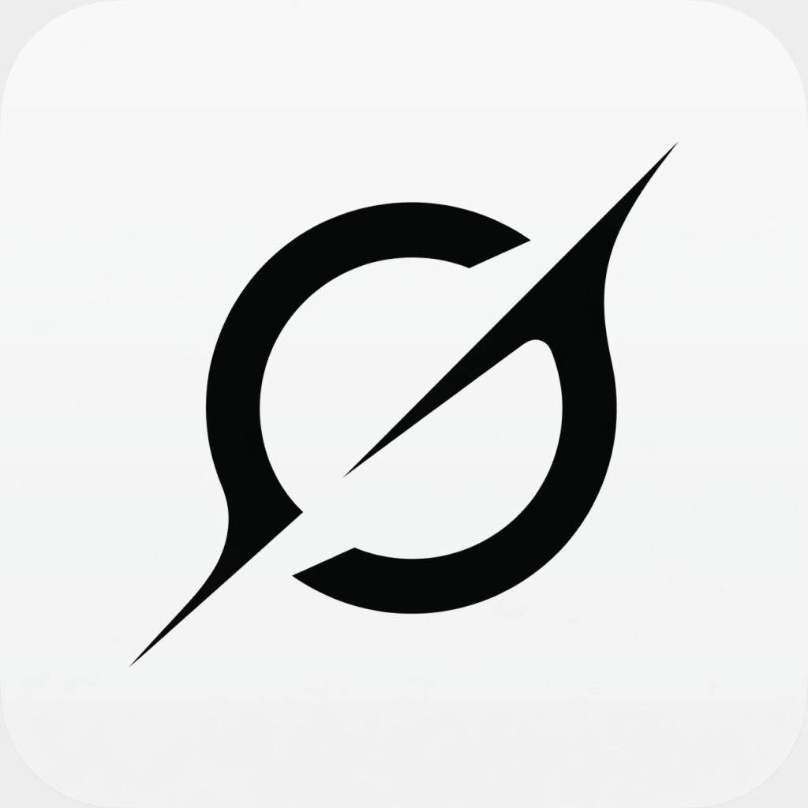

OpenGrok Plugins
JetBrains 里的侧栏。IntelliJ、WebStorm、PyCharm 都能装。能改当前工程，也能跑命令。
plugins.jetbrains.com/plugin/33923-opengrok-plugins
OpenGrokJetBrains 里的侧栏。IntelliJ、WebStorm、PyCharm 都能装。能改当前工程，也能跑命令。
plugins.jetbrains.com/plugin/33923-opengrok-pluginsVS Code 里的同一块侧栏，钉在编辑器右边。
marketplace.visualstudio.com/items?itemName=kafei520cn.grok-for-vs-code单独的桌面窗口。左边是会话，中间聊天，底下输入。
github.com/kafei520-CN/OpenGrok/releases/latest窗口
你在客户端里怎么聊、怎么批，这里也一样。
字是一个个出来的，不用等整段写完。思考可以收起。工具每一步都留在对话里。
/ 用来跑命令，@ 把仓库里的文件附上。卡片点了只填字，不会自己发出去。
会话、插件、MCP、工作树、记忆、设置和登录都在左边。
浏览器登录就行。也可以把 console.x.ai 的 API Key 贴进来。还剩多少配额，看左下角。
这个程序的数据写在 %USERPROFILE%\.opengrok。grok 的会话、技能、MCP 还是 ~/.grok。
局域网或者一个公网地址，别的设备也能开这个窗口。改文件、跑命令之前要先填配对码。
准备
安装包里没有模型。OpenGrok 用 ACP 连本机 grok，也就是它的 agent stdio。
Windows 跑官方安装脚本。装完，终端里有 grok，账号也登着。
装桌面版，选一个项目文件夹。文件留在这台电脑。
新建，点卡片，或者直接打字。diff 你自己看。工具调用可以允许，也可以拒绝。
安装包
现在是 0.4.0。推 v* tag 之后，GitHub Actions 会打安装包。源码也能自己编。
没装的话，窗口是空的。先装官方 CLI，登录完再打开。
irm https://x.ai/cli/install.ps1 | iex
curl -fsSL https://x.ai/cli/install.sh | bash
在仓库根目录跑下面的命令，打出来的是你现在这个系统的包。
npm install; npm run dev
npm run pack
说明
不是，xAI 不维护这个项目。窗口是另做的，里面跑的是你自己安装的 Grok CLI。
不能。窗口连的是本机 grok agent 的 stdio，协议是 ACP。Windows：irm https://x.ai/cli/install.ps1 | iex
程序自己的偏好和项目列表在 %USERPROFILE%\.opengrok。会话、技能、MCP 在 ~/.grok，那是 CLI 的目录。
Windows 10 及以上，平时主要在这上面用。macOS 有 Intel 和 Apple Silicon 两份。Linux x64 有 AppImage、deb、rpm、tar.gz。
右上角的 中 / EN，选一次就记住了。客户端设置里也有简体中文和 English。